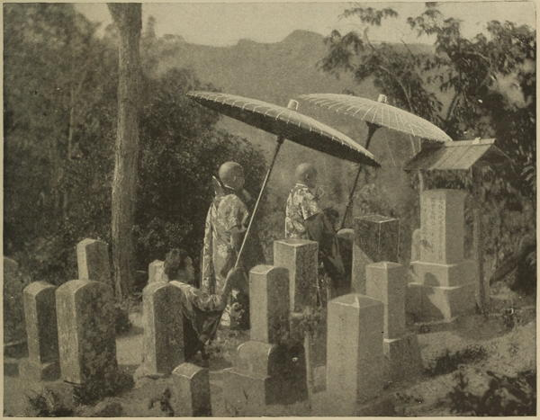

“Buddhist priests in a cemetery”
Japan (1897)
In Japan, religion is not used as in some countries to conceal immorality, but rather to give it countenance and support, so that practically there is very little difference here between a temple and a tea-house.
Narrative of the Earl of Elgin’s Mission to China and Japan (1859)
The larger temples [in Hakodate] have all their different shrines, or small chapels, dedicated to particular devotions. Besides the various images of Buddha, a virgin and child are frequently seen, with many other most interesting deities, male and female, to whom prayers are offered up, much in the manner and for the same purposes as they were two thousand years ago to Venus, Diana, or Mercury. I have sat for hours on the steps of these temples, and watched the devotees as they put off the shoes from their feet, and entered the precincts of their sanctuary. At one time, two young and interesting women, in their newest costume, were squatted down before the drums, beating in cadence, to the monotonous mumblings of a bonze, hidden somewhere behind the altar. At another time, a poor old decrepid creature, with her brown and shrivelled bosom and legs bare, would put down her basket, and prostrate herself before some favourite god. Then a peasant, a merchant, a soldier, would look in at the door, fold his hands open upon his breast, and bow his head a few times, count his beads, and then, nine times out of ten, turn and examine me, and, at last, sit down by me on the steps and smoke a pipe. Seldom an officer, or a man of rank, was seen; the poor and the women seemed the only worshippers.
Japan, the Amoor, and the Pacific (1861)
There are many very interesting temples in Yedo, situated in little nooks or on shady mounds, and free admittance into them all was granted us. It was only necessary to put off the shoes from your feet, not at all on account of the sanctity of the place, but to avoid soiling the mats. The bonzes mostly were barefooted. Many of the altars were most richly decorated. Idols wrought out of the precious metals; images cut in curious stone highly polished; slabs and globes of rock crystal; rich embroidery in gold, silver, and coloured silks, were tastefully arranged on the altar pieces of grotesquely carved wood. Here and there around the walls were huge and hideous deities, and sometimes there were near the door posts with little racks containing slips of paper covered with written characters, apparently the offerings of anxious votaries. Behind the temple resided the bonzes attached to its service, and what a listless lazy existence theirs must be! It may be with some that in their contemplative repose, their minds are concentrated in trying to fathom the unfathomable; yet with the greater part of them, I should imagine, their repose is but torpor and forgetfulness, the dozing effects of a slow and easy digestion.
Japan, the Amoor, and the Pacific (1861)
Our friend was most anxious to shew us a huge figure of bronze he had himself once seen [at Kamakura], but which no European had been allowed to inspect until 1861, a year previous to our visit. As he had, unfortunately, forgotten the locality, we spent much time wandering about in a useless search for it. Deceived by some one whose advice we followed, we entered a village which we were led to believe no European had ever yet seen, where we visited a most curious temple. An old man, with a few grey hairs gathered into a tiny knob on the summit of his cranium, seeing we were strangers, and feeling anxious, no doubt, to relieve our pockets of some of the weight in coin they contained, signified his wish to show us this singular place.
Having accepted his offer of guidance, we followed his feeble footsteps, and proceeded to the temple, which we found to consist of three good-sized caves excavated out of the solid rock. Ascending to these by a flight of steps, we entered the first, which was entirely surrounded by small figures, one, much larger than the rest, being placed conspicuously in the centre. The old man was very anxious for us to stand on a circular spot in the floor, exactly opposite this figure, which we at first refused to do, suspecting he wished us to make obeisance to the idol. Finding, however, this was not his desire, we afterwards complied with his wish, to the undisguised delight of our ancient guide, going through the same mysterious ceremony in all the caves.
Though we could make out most of what he said, we could not comprehend his reason for this curious proceeding, our friend who kindly acted as interpreter being unable to understand his explanation, which he considered to be owing to the fact that we were in a village the inhabitants of which had never been accustomed to speak to Europeans in their native tongue, those who have frequent intercourse with foreigners usually adapting their language to the comprehension of those they speak to, and thus naturally falling into a slower and more distinct mode of articulation.
Being however too curious to be baffled by trifles, we requested our friend to try his utmost to ascertain what could be the old man’s reason for his singular entreaty, and our perseverance was subsequently crowned with success. It appears that in each of these caves, below the circular spot on which the old man wished us to stand, there is an excavation, in which, some time ago, three men were buried alive for refusing to worship after the manner of the Japanese; and now it is the earnest desire of every bigot of their creed to persuade all who enter the temple to stand directly above these tombs—an act which, in their opinion, is probably significant of their trampling on the dust of the heretics buried below. Had we known this at the time, how reluctant we should have felt to comply with such a revengeful request!—with what a deep feeling of interest we should have regarded the stone which covers the honoured bones of those conscientious martyrs who suffered death in a living tomb rather than render to idols of wood and stone the worship which is due only to the living God! Who knows but these three formed part of the band of Christians once so numerous in Japan?
A Lady’s Visit to Manilla and Japan (1863)
During the time we were with our host he received, according to a curious custom of the Japanese, a present by which they indicate the superstitious reverence with which they regard the memory of their ancestors. Whenever a gift is made by them, a dried shell-fish, called awabie, together with a bit of sea-weed, is attached to the paper in which it is enclosed; the reason they assign for this being that the founders of the Japanese kingdom, or the first settlers on the principal island, were fishermen. The observance of this practice is, therefore, looked upon as an imperative duty, by which they remind themselves of the ancestors from whom they derive their origin, and whom, like the Chinese, they regard with the utmost respect and reverence. Whether they worship them or not, I cannot exactly say.
A Lady’s Visit to Manilla and Japan (1863)
About noon we reached Kamakara, and leaving our horses at an inn, started on foot to visit the Daibutz. A half-hour’s walk along a comparatively broad road, leading under peculiar archways placed at short intervals, brought us to the shore of Wodowara bay, and near this to our destination. Passing through an enclosing grove of evergreens, we came into a large open space paved with flagstones. In the centre of this is the image. It represents Budda sitting, in the Oriental manner, on a lotus. It is of bronze, fifty feet high, and ninety-six feet in circumference at the base, and is raised on a pedestal five or six feet from the ground.
We had all come expecting to see some grotesque idol, and we were therefore pleasantly surprised, when, instead of this, we found ourselves admiring a work of high art. It is Budda in Nirvana. The sculptor has succeeded in impressing upon the cold metal the essence of the promise given by Sakyamuni to his followers, a promise which has been during more than twenty centuries the guiding hope of countless millions of souls. This is the doctrine of the final attainment of Nirvana—the state of utter annihilation of external consciousness after ages of purification by transmigration.
Both the face, which is of the Hindoo type, and the attitude are in perfect harmony with the idea intended to be expressed. I felt that I saw for the first time, and where I least expected it, a realization, in art, of a religious idea. No Madonna on canvas, or Christ in marble, had ever been other to me than suggestive, through the aid of an acquaintance with the subjects treated. The Budda of Kamakura is a successful rendering of a profound religious abstraction.
Across America and Asia (1870)
In descending the steps [of a temple near Edo] our attention was drawn toward a group of fifteen or more representations of the phallus. They were of sandstone, from a few inches to two feet long, and stood erect around a central column containing a cavity either intended to hold a lantern or an incense-burner. The phallus enters largely into the symbols of the popular religion, if one may judge by the great number of representations of it exposed for sale.
Across America and Asia (1870)
The Kama-kura temples are not kept in good repair, nor do they seem to retain their original importance: only a few years ago two of their objects of interest, a handsome bronze bell and a pair of sacred white ponies, were still in existence; but we look in vain for them, and one of the priests at last informs us that they have been sold! There still remain, in a grove close to the temple of Hatchiman, two curious-looking black boulders, railed in, to which parents who wish to be blessed with children are said to repair to worship. Priestcraft and superstition are strong powers among the poorer classes of Japan.
Round the World in 1870 (1872)
A Buddhist priest lives at the place [the Daibutsu in Kamakura], and combines the practice of his faith with the sale of beer to strangers and Europeanized Japs. I managed to get this man’s views of the changes going on in his country, and as he expressed himself very frankly on the matter, what he said is worth recording. The priesthood, he said, was, as a line of business, not worth following; at least to be a Buddhist priest was no good now, since the State had thrown it off. The people did not seem to care for it, and a living could scarce be made by it. He blamed the foreigners as the cause, not that they had any direct hand in disestablishing Buddhism; that was only part of the great movement going on, which was all due to this foreign influence. He did not speak bitterly, for he explained that he found the sale of the beer pay better than the religious services he performed to the few Buddhist devotees who now came. He talked of ceasing to be a priest, and becoming a merchant. From this it will be seen that the Almighty Dollar is becoming a Missionary, and doing something towards converting the heathen; nay, there is some chance of this new religious influence converting the great bronze Buddha himself. There are rumours that the Japanese Government have the idea of selling Dai-Bootz, and speculators have been computing already the quantity and quality of the bronze, to see what it would be worth for remelting and passing through a metempsychosis into a new coinage in England or elsewhere.
Meeting the Sun (1874)
A very curious, and not very pretty custom they have, is to try and keep away evil spirits by chewing paper and spitting it at their images. This accounts for the untidy appearance of some large images which we saw bespattered all over, with these balls of half masticated paper. The small pieces of paper which are sold for this purpose, have on them the likeness of some god or goddess and some written characters, probably either a prayer or a malediction.
Letters from China & Japan (1875)
The religious indifference of the Japanese leads to singular results. I saw one day, in the commercial summary of a trade journal, this paragraph:—“Bronze.—The export of this metal has greatly increased, as, owing to the religious reforms of the Japanese Government, old idols and temple bells are being very largely sold.” The “old idols” of course mean Buddhas. The Government could never have acted as it has done, had the hearts of the people really been in their Buddhist faith.
English Influence in Japan (1876)
There seems little religion among them, for, though the temples are numerous, there are hardly any worshippers. It was my first visit to a heathen land, and contrasting these people with the inhabitants of Turkey, Syria, and Egypt, made me think that the absence of idolatry places the Mohammedans, with all their errors, in a far superior position to the worshippers of idols. It made me feel the immense importance of Christian missions in Japan. We have forced our way into the country, but Europeans too often imitate the vices and the immorality of the natives; and unless we give them the Bible, we shall have done them harm instead of good.
A Visit to Japan, China, and India (1877)
Sintooism is the native religion of Japan. Its probable origin is in the worship of the sun (O-Ten-to-sama). The moon (Tsu-ki-sama) is also an object of worship. The emperor (Ten-shi-sama) is regarded as the direct descendant of the sun. Some deity must have made Japan, they say, and thus their fables and stories of gods were invented and images formed. Japan is filled with these images. We see them in the temples and in shrines by the wayside, on the tops of the highest mountains and in the farthest recesses of the caves. Every house has its shrine, and the people carry about with them pictures or exceedingly small images of the gods. There is Ha-chi-man-sama, the god of war, and I-nari-sama, the god of rice, and Ye-be-su-sama and Dai-ko-ku-sama, the gods of riches, and many others. The image of the fox is worshiped as a servant of I-na-ri, because the animal is a devourer of the insects that are apt to feed upon the rice. The snake is one form under which the god Ben-ten appears. The horse, the image of which is seen in many temples, is the servant of Ha-chi-man-sama. These images are of all sizes, from the tiny Dai-ko-ku-sama, which we can scarcely hold in our fingers, to the colossal Dai-Butsu, on whose thumb we can sit with ease.
Some of these gods are merry-looking fellows. There are seven who are called the “happy gods” of Japan, and they all have smiling faces; while others are hideous in their appearance, such as the red and green monsters who stand at the gates of the temples to protect the other gods, and the frightful representations of Satan and his attendants.
The Sunrise Kingdom (1879)
We can now distinctly see the mirror in the centre of the temple [in Tokyo], surrounded by those wands with curiously cut tassels of white paper which are called gohei, and which are seen in every Shinto temple. The original idea of them might have been that of a duster, as it is the custom of the priests to make two or three passes with them in the air before praying, apparently for the purpose of clearing the atmosphere from any impurities before invoking the god. Here, too, are the worshippers, some kneeling, some standing at the foot of the steps. Let us watch this new-comer for a moment. He walks to the foot of the steps, throws a coin on to them, and stands for some seconds gazing into the temple, then raises his hands and claps them sharply three times. He then places them together and bends his head, muttering a short prayer. After another prolonged gaze at the sacred mirror and its surroundings, he moves off to make room for other equally devout worshippers, who present their offerings, go through the same ceremony, and in their turn make way for others, and so on. The clapping of the hands is only saved from appearing ridiculous to foreigners by the thoroughly reverent and earnest looks of the worshippers. The object of this, we are told, is to attract the attention of the kami, or god, to the prayers which are to follow.
Japan: Its History, Traditions, and Religions (1880)
All the way up [to the waterfalls near Kobe] are scattered tea-houses, with one more or less pretty girl at least to each. Nor is the place wanting in the conveniences of worship, for there are little temples and gods and shrines sufficient in number for all reasonable people. We stopped at one of these on the way down, where the goddess Kwannon was surrounded by small gilt figures, just as the Virgin is surrounded by angels of music in Fra Angelica’s famous picture in the Uffizi Palace, Kwannon’s angels and the Virgin’s being of about the same size. There were other gods about this building, and we happened to be present at the time when numerous cups of rice were being offered upon the altar by an old woman attendant. There was a box for voluntary subscriptions. I could not quite understand this temple, as no priests were visible, and there was a business-like money-making look about the arrangements which gave the whole thing the appearance of a purely commercial speculation. There were several Japanese gentlemen with us, but none of them seemed to understand any more about it than I did; one of them suggested, however, that the proprietors were probably priests, and that may have been the true explanation of the matter. At any rate there were the gods and the opportunities for worshipping and subscribing all complete.
Japan: Its History, Traditions, and Religions (1880)
At the village of Tatsuta we turned off to visit the famous and ancient Buddhist temples of Horiuji, where we were most courteously received by the two principal priests and other officials, who hospitably entertained us with tea and cakes. This group of temples, with a pagoda, were all twelve hundred years old, and bore the marks of their age both externally and internally. They possessed some wonderful treasures—after the fashion of many of our Christian temples in Europe—the most precious of all being a piece—an extremely small piece, but still a piece—of the very bone of Buddha himself! I am not quite sure, but I have some reason to think that this most precious relic, which our unworthy eyes were permitted to behold, is no other than that which was held in the clenched hand of Prince Shotoku-taishi when he was born, and was revealed when at the age of two years he turned to the east, invoked Buddha, and displayed this very wonderful proof of heavenly favour. The valuable and wonder-working relic was inclosed in a small crystal globe, within which you could both see and hear it as the globe was shaken, the sacred crystal sphere being supported on a stand of crystal, and surmounted with a crystal crown-piece. Every day at twelve o’clock the people were permitted to see and bow before this unquestionable evidence of the greatest verity of Buddhism, the mission of Buddha himself to the earth! As shown to us, this treasure was set out upon a splendid silk cloth, thickly embroidered with gold, and adorned with cords and tassels, which may have had a significance too profound for me.
Japan: Its History, Traditions, and Religions (1880)
Passing under another torii (of plain unpainted timber, like all the torii of these Isé shrines), we came to the outer gate of the temple proper, to which alone of three successive gates we and the other pilgrims were allowed to approach. With certain extremely rare exceptions, extending only to the Mikado and commissioners of his, none but priests are allowed to pass this first gate. It was an open gate, however, with a simple white cloth or curtain hanging across it, blowing about as the wind listed. Through this open gate, or past the sides of it if you preferred to stand there, you could see the next gate, and beyond that again was a third, and then came the temple proper, which could not be seen. This was all! The buildings, as far as seen, were all of the plainest possible kind, not unlike substantial well-thatched farm-buildings at home. The mirror at this outer temple was not the original mirror, and the priests did not for a moment leave us to suppose that it was. There was, in fact, no pretence of any kind about them; but the ancient buildings and the plain white curtain were left to produce that which is perhaps the deepest and most lasting of all impressions made by religious externals, viz. that of combined simplicity and antiquity.
Japan: Its History, Traditions, and Religions (1880)
One cannot be long in Japan without perceiving that the intelligent classes and rising generation scarcely profess a belief in their old faiths either Shinto or Buddhist, and are not, as far as present appearances go, likely to adopt any other. ‘I am not much particular about religion,’ said a Japanese gentleman who had travelled much in Europe to us the other day; and another young friend, after five years of education and church-going in London, seems content to let his religious opinions remain in a ‘fluid state.’ But will public morality suffer from the decay of religious sanctions? for the Japanese (in a wide sense of the word) are a moral people, dishonesty and crimes of violence are rare, family affection and filial obedience strong, and, as far as we can see, the law of kindness prevails amongst these peaceful and industrious peasants.
Journal of a Lady’s Travels Round the World (1883)
I thoroughly enjoyed the hour and a half that I spent roaming about the grounds [of the Shiba [in Tokyo] temple in Tokyo]. The place was impressive because of its death-like silence. Excepting a half-starved looking Japanese youth who followed me at a respectful distance, but whose curiosity would not permit him to take his eyes off of me, I was alone while I trod the pebble pavement, wandered through the darkened groves, or tried to count the many stone lanterns, votive offerings, whose inscriptions were to me illegible and, for that reason, perhaps, the more impressive.
In the temples, I found enough to interest me in the grotesque carvings of the eaves and the heavy portals, in the odd mixture of real art and tawdry ornament on and about the altars, and in the deserted appearance of the buildings, emphasized in this instance by the presence of a solitary priest in the smaller and brighter looking one. But the impression I brought away with me was due rather to the dismal beauty of the temple grounds. There are giant trees, whose great trunks and sturdy branches show their age, but whose rich, thick foliage, shutting out the sunlight, prove it to be a “green old age.” I lingered there long after I had beheld all that was to be seen. As I am not learned in other people’s religions, I indulged in no philosophic reflections on Buddhism or Shinto-ism. I could not, however, help thinking that the Shiba temples, in their emptiness, seemed to say that all who had ever worshipped there had long since emigrated to the land of spirits. Once upon a time Shiba was a great shrine, and it is easy to imagine the vast enclosure thronged with pilgrims from all parts of Japan, paying obeisance to Buddhist priests, rendering homage to the pot-bellied images, and devoutly tending the lamps in the stone lanterns. It must have been a brilliant scene, rich with color effects and instinct with life and motion. Whether they beat the tam-tam then, as I heard them beating it outside of one of the Homura temples the other day, I cannot say. But of one thing I am sure—there must have been lots of babies there, for I never saw a real Japanese crowd without them. Some of the babies that you see during your walks, are really the handsomest creatures in Japan.
If I were attempting to indulge in fine writing, I should consider it quite a happy hit thus to lug in the infants; for the mere mention of them in connection with Shiba, suggests life, where now all is silent as death.
Jottings of Travel in China and Japan (1888)
As there has been no outgoing steamer since I wrote you about the Shiba temples, I will add a brief account of the Asakusa Temple, which is also in Tokio, but quite remote from the former.
Shiba is silent, solemn, dreary; Asakusa full of life. It was on a Sunday that B. and I visited it, but I am told that crowds as great as we saw can be found there every day in the year. It is approached through a long narrow avenue, lined on either side with shops and booths, in which are displayed all sorts of wares, such as one would find in the Ginza, but with a noticeable preponderance of sweetmeats, toys, little books with bright colored covers, fans, ornaments for the hair, and paper umbrellas. Then, too, there are voluble medicine men, selling lotions and potent draughts, on the merits of which they are expatiating to the gaping crowd about them. Besides these, there are old women with jars of the world-famed, pretty three-tailed goldfish of Japan, and others offering for sale birds of all sorts. Indeed, the approach to Asakusa Temple suggests a combination of a country fair and the pink lemonade and peanut environment of an American travelling circus show.
The temple is full of people, mostly women and children, with a sprinkling of old men. There are priests and acolytes at the altar. Women kneel at a sort of grating, and before leaving drop a coin between the bars. All is noise and bustle. Flocks of tame pigeons have made their nests up among the rafters and fly hither and thither as if used to the crowds about them. The decorations, although more profuse than at Shiba, are, as a rule, of a cheaper and more popular sort. We are especially interested by the large grotesque paintings of saints and warriors, and by the huge paper lanterns suspended from the beams in the roof. Then, too, there are several large bronze vases of unmistakable antiquity and beautiful workmanship.
It was well worth our while to visit Asakusa, for the sake of noting the contrast between it and Shiba.
Jottings of Travel in China and Japan (1888)
Far in the distance rises the peak of the sacred mountain Nan-tai-Zan, then come the lesser hills, with thick forests intervening; directly in front is the dashing tumbling torrent, while at the left, with half-closed eyes and folded hands, sit in eternal contemplation the statues of Amida. ...
Most of these statues are about life-size; many are headless, and otherwise bear evidence of no reverent treatment. A few carry their heads in their laps! Still it is not entirely deserted by pilgrims, for the printed prayers on slips of paper affixed to the stone images, and coins left in their laps, show that now and then some of reverent tendencies still visit this ancient shrine.
I caught Waku pilfering the coins from the laps of the images, and remonstrated with him. “It is much better to give them to children than to leave them out here,” replied the practical youth. I hope he reconciled his proceeding to his conscience, for he gathered into his sleeves every loose “cash” he could find. He is a type of young Japan, half sceptical of all religions, and yet not absolutely without reverence. I have met in Continental Europe young men who ridiculed the faith of their fathers, but who nevertheless took pains to cross themselves on entering a church or cathedral. So with Waku. He is not a Christian by any means, nor will he confess to the least leaning toward the faith of his ancestors. Yet he washed face and hands at the holy font, and when he thinks I am not noticing, I hear him rubbing his palms before a shrine. He tells me that under the old government of Tycoons these images were well cared for, but that since the accession of the Mikado they have been permitted to take care of themselves.
Rambles Through Japan Without a Guide (1892)
It was a great surprise to us to find how, almost invariably, the two prevailing creeds, Buddhism and Shintoism, are interfused, not only in the temples but in the minds of the Japanese. The temple [Haruna shrine in Gumma], with its Shinto gohei and roof, and its Buddhist ritual and images, affords a vivid representation of the twin faiths of the people, by whose teaching a child will be placed under the care of a Shinto deity at birth, but brought up and probably buried by Buddhist priests.
Japan As We Saw It (Bickersteth) (1893)
We passed an immense figure of the god Jizo cut in the rock at the wayside. Our chair coolies showed no signs of reverence for this image; in fact, all through our journeys in Japan we were a good deal struck by the complete indifference of such men to wayside shrines or temples.
Japan As We Saw It (Bickersteth) (1893)
The prosaic and blundering Anglo-Saxon (I do not apologise for the Celtic blood that flows in my veins) has but little use for pilgrimages. I think he would except Japanese pilgrimages, whether private or communistic, from his condemnation, if only he knew them. In the old days, when the country was divided into a great number of practically independent statelets, the pilgrimage served to keep alive in the mind of the peasant the idea of the national unity. The samurai had other means of doing this. He was obliged periodically to go to Yedo with his lord, and in the streets of the Shogun’s capital he rubbed shoulders with samurai from other parts, with whom he exchanged thoughts and ideas, and from whom he derived the nascent ideas of Imperial Oneness. But the peasant was not so fortunate. He was bound to the soil, and had it not been for these periodical pilgrimages, undertaken under religious sanctions, he would have known nothing of the wider life beyond the hills that bounded his valley. Even now, with military service and improved means of communication, the Japanese peasant has a narrow horizon. “The frog in the well,” says his proverb, “knows nothing of the great ocean.”
To-day, he no longer needs to be taught the lesson of national unity, but the pilgrimage has by no means lost its practical value. As the Japanese gentleman has for the last thirty years been travelling abroad, note-book in hand, gathering valuable pearls of information from all nations and climes, so the Japanese peasant picks up during his pilgrimages much valuable knowledge which he brings home with him in his retentive memory. Here he sees an improved water-wheel, there a newly-introduced fruit—an apple it may be, or a pear, or a peach, or a grape, which might do well in his own native plains and valleys. Each year the village in this way adds to its stock of knowledge, and it is wonderful how in the most out-of-the-way villages, amidst all the squalor of the simple life, such as the Japanese peasant knows it, there is nevertheless a truly immense fund of practical information about the ways and inventions of the great world outside. The Japanese pilgrim is no religious dreamer like the abstracted Hindoo; he travels with his eyes open, and gathers more than merely religious impressions on the way.
Every-day Japan (1909)
I have never yet met an educated Japanese of any sort who did not give an apologetic smile when the religious observances of Asakusa-Kwannon were mentioned. According to some of these gentlemen, Japan has laid aside all mediæval superstitions, and I have uniformly been discouraged by Japanese when I have wished to investigate these practices. This has been for fear I should hold them up to ridicule, for the Japanese is morbidly afraid of being laughed at. The day, however, has long gone by when the European could afford to laugh at the religious practices of the Japanese, and it is with a totally different object in view that I have dwelt on the popular cults at Asakusa-Kwannon.
The Asakusa-Kwannon Temple is thronged morning, noon, and night, and on every day in the year, with worshippers of every sort and of every age. There is no other temple in Tokyo like it: none where you can see such a constant stream of fervent devotees, each with his keenly-felt want to present before the Invisible Power. These worshippers come mainly from the lower and lower-middle classes, and are therefore the representatives of the vast majority of the nation. With the Asakusa Temple before me I cannot believe the oft-repeated statement that the Japanese has no religion. He has a religious sense, deep and fervid, a realisation of his own need of the help of a beneficent power beyond him, and, whatever the proud samurai may think, the great mass of Japanese to-day do stretch out hands of dimly-groping faith to Someone who is not a God far off, but a very present help in time of trouble.
Every-day Japan (1909)
◀ HospitalityMorality ▶